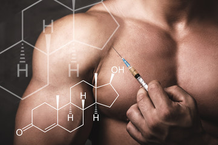

Анаболічні андрогенні стероїди (ААС)
Штучні синтетичні аналоги чоловічого статевого гормону тестостерону створюються для прискорення білкового синтезу в м'язах, проте їхнє вживання несе колосальні ризики для здоров'я.
Штучні синтетичні аналоги чоловічого статевого гормону тестостерону створюються для прискорення білкового синтезу в м'язах, проте їхнє вживання несе колосальні ризики для здоров'я.
